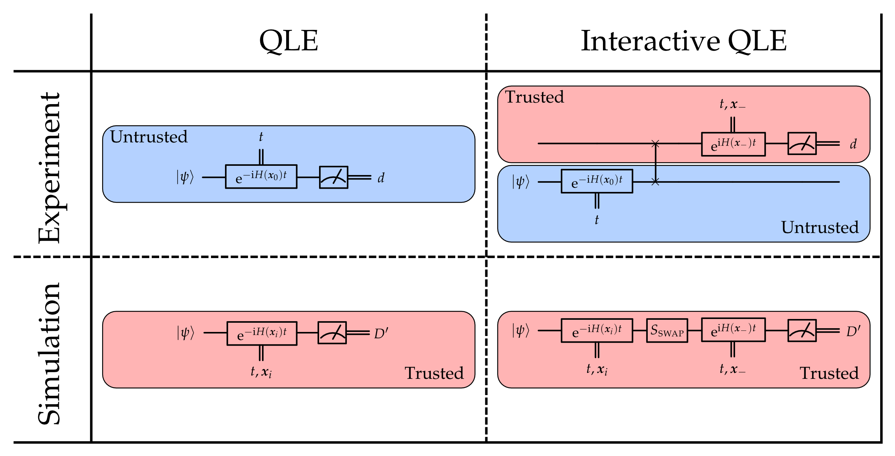
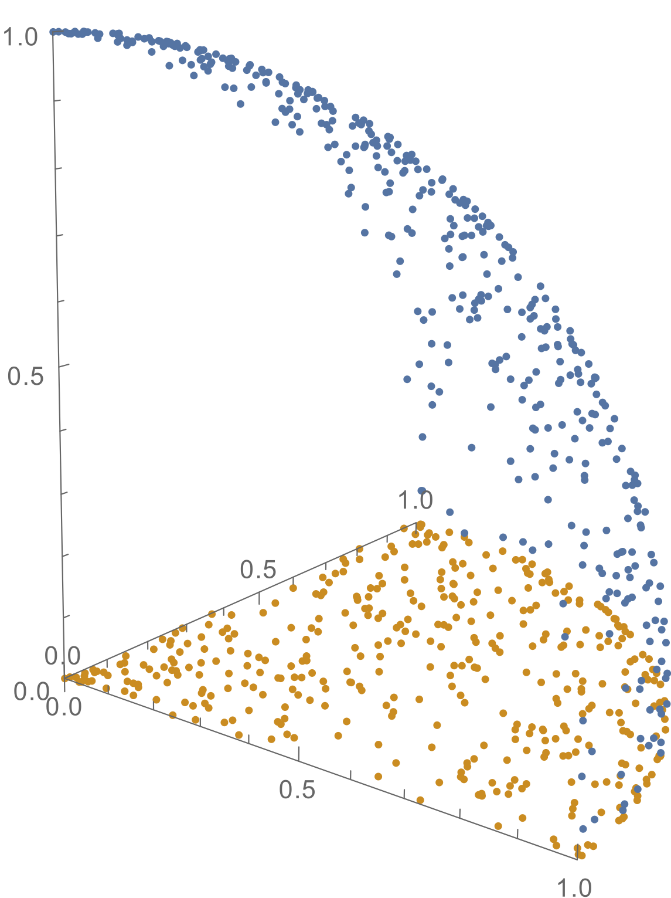

Characterization, Verification and Control for Large Quantum Systems
PhD Thesis Defense
Christopher E. Granade
Institute for Quantum Computing
We want to build a quantum computer.
Thus, we must characterize, verify and control devices at a superclassical scale.
Challenges
Parameter Count
Can't write down result of state or process tomography experiments!
Simulation Costs
We don't know how to efficiently simulate quantum systems with classical computers.
Express characterization and control algorithms in terms of simulation, then substitute in quantum simulators.
Yields semiquantum approaches that avoid classically-infeasible simulation calls.
Classical Characterization
We extend and implement particle filters to learn Hamiltonians
Semiquantum Characterization
We add quantum simulation resources to deal with large Hilbert spaces
Particle Filter Applications
We develop applications to
model selection,
region estimation, and
tracking stochastic processes
We demonstrate in
nitrogen-vacancy centers, and
neutron interferometry
Classical Control Design
We extend optimal control to include classical models
Semiquantum Control Design
We recast optimal control as a memetic problem include quantum resources
Insight from physics also enables more new algorithms.
Quantum Bootstrapping
We use information locality to provide a potentially-scalable characterization and calibration algorithm
Bayesian Inference as a Platform
Likelihood function $\Pr(\text{data} | \text{hypothesis})$ represents
simulation of experimental system.
Model Reduction
For large systems, $H$ has too many parameters to write down efficiently.
Let $H = H(\vec{x})$ be a model with less parameters.
Examples: Ising model, 2-local Hamiltonians.
Sequential Monte Carlo
Represents distributions by finite sums for efficient numerical implementation.
\begin{align} \Pr(\vec{x}) & = \sum_i w_i \delta(\vec{x} - \vec{x}_i) \\ w_i & \mapsto w_i \times \Pr(\text{data} | \vec{x}_i) / \mathcal{N} \end{align}Liu-West Resampling dynamically moves samples to recover numerical stability.

We extend to include multimodality, postselection and canonicalization
$\Pr(1 | \omega_1, \omega_2; t_1, t_2) = \cos^2(\omega_1 t_1 / 2) \cos^2(\omega_2 t_2 / 2)$
Near-Optimal Performance for $H = \omega \sigma_z / 2$


Randomized Benchmarking
Choosing random sequences of Clifford gates effectively twirls errors.
Yields simple simulation-free likelihood:
\begin{equation} \Pr(\text{survival} | m) = A p^m + B \end{equation}
$p = (d F - 1) / (d - 1)$, $A, B$: preparation and measurement
Reference: $m\in\{1, 2, \dots, 100\}$, interleaved: $m \in \{1, 2, \dots, 50\}$.
We use prior information to accelerate learning.
Essential for use in optimal control.
Bonus: the estimates we obtain have meaningful error bars.
QInfer
Extensible and flexible open-source library for Python.
Easy to Use
import qinfer as qi
model = qi.BinomialModel(qi.RandomizedBenchmarkingModel())
prior = qi.UniformDistribution([[0.9, 1], [0.4, 0.5], [0.5, 0.6]])
updater = qi.smc.SMCUpdater(model, 5000, prior)
Quantum Hamiltonian Learning
Replace likelihood calls with quantum likelihood evaluation, using trusted device.

Heuristics for experiment design are critical.
Particle Guess Heuristic
- Draw $H_-$, $H_-'$ from posterior.
- Evolve under $H_-$ for $t = 1 / \|H_- - H_-'\|$.
Simulation-free.
Scaling for Complete Ising Graph
Scaling with Model Dimension
Number of Parameters?
Sequential Monte Carlo and QHL are Robust
We obtain accurate results even with sampling error, imperfect coupling, and approximate models.Once we have characterized a quantum device, how do we control it?
Gradient-ascent optimal control methods use structure of problem. We want something black box.
We use genetic crossover and mutation steps to find optimal control.
Population-based, ideal for multi-objective case.
Implement objective oracle using randomized benchmarking on a quantum simulator.
Pareto Optimality
Find robust pulses by demanding non-domination over hypotheses.

Example: $ \max o(\vec{r}) = \vec{r} \text{ s.t. } \|\vec{r}\|_2 \le 1 $
Memetic Steps
Use simultaneous perturbation stochastic approximation (SPSA) to improve individual pulses $\vec{p}$.
\begin{align} \vec{\nabla} f \cdot \vec{\Delta} & \approx \frac{f(\vec{p} + \beta \vec{\Delta}) - f(\vec{p} - \beta \vec{\Delta})}{2 \beta} \\ \vec{p} & \mapsto \vec{p} + \alpha \vec{\nabla} f \cdot \vec{\Delta} \end{align}
$\vec{\Delta}$: random $\pm 1$ vector, $\alpha, \beta$: approximation parameters
Calculating gradients is hard. Projecting $\vec{\nabla} f$ onto a random vector takes 2 calls.
$\alpha, \beta \to 0$ as algorithm proceeds; can bound effect of memetic steps to provide prior information to benchmarking oracle.
Evolutionary Strategies
Co-evolve mutation rates, memetic parameters to provide stability.
\[ I = (\vec{p}, \sigma_p, \alpha, \beta) \]
Example: $\left.\frac{\pi}{2}\right)_x$
We consider controls up to $70$ MHz, but we want robustness to $\pm 100$ kHz static field, ringdown distortion, imperfect measurement of distortion.

Memetic optimization finds Pareto optimal pulses with fidelity $\ge 0.99$.

200 generations, 140 individuals, 5 hypotheses ($\pm 100 \text{kHz}$), noisy evaluation of distortion (~20 dB SNR)
Adding quantum resources to characterization and control algorithms thus yields semiquantum algorithms.
We can go further by building on physical insights…
Quantum Bootstrapping
Quantum Hamiltonian Learning is robust to approximate models.

Use information locality (Lieb-Robinson bounds) to bound error incurred by truncating qubits.

Scan observable across trusted
register and untrusted device.

Perform multiple rounds to reduce Lieb-Robinson velocity by current knowledge
of $H$.
50-qubit untrusted device, 8-qubit simulator, 4-qubit observable
Control Calibration
Iterate compressed quantum Hamiltonian learning for each control field.
Pseudoinverse then gives control settings to implement simulation at next iteration.

50-qubit untrusted device, 8-qubit simulator, 4-qubit observable, 300 measurements/scan